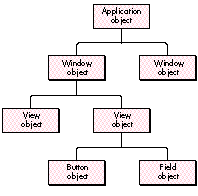
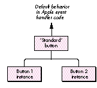
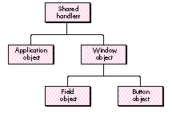
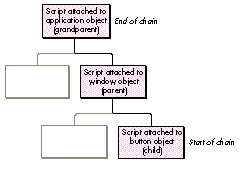
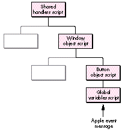

"Programming for Flexibility: The Open Scripting Architecture" in develop Issue 18
showed you how to use scripts to increase your program's flexibility. This article
builds on that one and explains how to implement an inheritance scheme in your
application that will enable your AppleScript scripts to share handlers and properties
and to support global variables. You'll also learn a way to support inheritance in other
OSA languages with just a little extra work.
In Issue 18 ofdevelop , I showed you how to attach scripts to application-domain
objects and how to delegate the handling of Apple events to those scripts. I left you with
a challenge: to figure out how to support global variables and to enable scripts to share
subroutines and handlers. To meet this challenge you need to implement inheritance.
The AppleScript 1.1 API gives you all the necessary calls to implement inheritance in
embedded AppleScript scripts, but not all are documented yet inInside Macintosh . This
article documents the calls you need and describes an inheritance scheme that relies on
them.
In a nutshell, here's the scheme :
You can use much the same scheme to implement inheritance in other Open Scripting
Architecture (OSA) languages, but more work is required to link scripts together in
an inheritance chain, and you must forgo the luxury of sharing global variables
between scripts. At the end of this article, the section "Inheritance in Other OSA
Languages" describes the extra work your program must do.
The sample program SimpliFace2 on this issue's CD demonstrates the inheritance
mechanisms discussed here. SimpliFace2 is an extension of SimpliFace, the basic
interface builder used to illustrate the article in Issue 18. The SimpliFace2 sample
code has a compile-time flag qUseOSAinheritance, defined in the header file
SimpliFace2Common.h. If this flag is undefined, the program uses the
AppleScript-specific inheritance scheme described in the bulk of this article. If the
flag is defined, SimpliFace2 uses a general-purpose scheme that involves the extra
work outlined in the section on inheritance in other OSA languages.
The first thing to do is to decide what kind of script inheritance hierarchy to use.
Youcan use a runtime containment hierarchy (like that used by HyperCard and
FaceSpanTM), a class hierarchy (like that used by AgentBuilder), or some hybrid of
the two, as demonstrated by SimpliFace2. Let's look at each of these hierarchy types in
turn.
FaceSpan (formerly Frontmost) is the interface builder bundled with the
AppleScript 1.1 Software Development Toolkit. Perhaps the best known OSA "client,"
FaceSpan was developed by Lee Buck (of "WindowScript" fame) of Software Designs
Unlimited, Inc. AgentBuilder, from commstalk hq and Full Moon Software Inc., is a
framework for the creation of communications and information-processing agents that
uses embedded OSA scripts to customize agent behavior. *
Figure 1 shows a runtime containment hierarchy. In this kind of hierarchy, objects
inherit behavior from their containers at run time. In the object containment
hierarchy used by HyperCard, for example, the scripts of buttons and fields within
cards are at the bottom of the hierarchy. Above them are the scripts of the cards that
contain the buttons and fields, and above each card script is the script of the
background that contains the card. Above each background script, in turn, is the script
of the stack that contains all the backgrounds. The handlers in each container's script
are shared by the scripts of all the objects it contains.
Figure 2 shows a class hierarchy. In this kind of hierarchy, objects inherit behavior
from their parent classes. For instance, the behavior of AgentBuilder objects is
defined in an "ancestor" object of each class, which is the parent of all instances of that
class. This permits the standard scripted behavior of object classes to be overridden in
derived class instances.

Figure 1. A runtime containment hierarchy

Figure 2. A class hierarchy
Figure 3 shows the hybrid script inheritance hierarchy used in SimpliFace2. In
SimpliFace2, the scripts of user-interface objects -- such as windows, labels, and
buttons -- are organized so that they inherit behavior from the runtime containment
hierarchy. However, the script of the application object isn't included in the
inheritance chain for the script of any user-interface object, and the shared handlers
script becomes the ultimate parent of all other scripts. I chose to use this hybrid
hierarchy in order to demonstrate a wider range of techniques, not for any reason
intrinsic to the program design.
The kind of script inheritance hierarchy to use depends on the nature of the messages
being handled in your program. Using a class hierarchy is most appropriate if the
messages are Apple events defined in the program's 'aete' resource. If the incoming
messages are primarily user-defined subroutines being handled inside scripts, using
a runtime containment hierarchy is probably more natural for the scripter.

Figure 3. The hybrid script inheritance hierarchy used in SimpliFace2
Another way to look at this choice is that if you want to enable users to customize your
program's capabilities by attaching scripts to application-domain objects, using a
runtime containment hierarchy isn't always the best idea. Because different
application-domain objects handle the same Apple event message in different ways (in
other words, the semantic meaning of the message differs depending on what object it's
directed at), unwanted side effects could result from an object's handling an Apple
event message intended for a different level in the containment hierarchy. Using a
class hierarchy ensures that messages will be dealt with only by objects of the class
that understands them.
Once you've chosen the type of script inheritance hierarchy most appropriate for
your program, you can link scripts together in an inheritance chain.
Linking scripts together in an AppleScript inheritance chain is as simple as setting
their parent properties. Before I tell you how to do that, though, let's review a few
facts about script objects and inheritance. As mentioned in the Issue 18 article, a
script context (a script compiled using the AppleScript OSA component) is equivalent
to a script object in the AppleScript language, so everything I say here about script
objects applies to script contexts as well.
ABOUT APPLESCRIPT SCRIPT OBJECTS AND INHERITANCE CHAINS
Script objects can contain global variables, properties, and handlers for Apple event
messages and subroutine calls. A script object can have as its parent property an
object specifier or another script object. Thus, one script object can become the
parent of another, and the child script object can inherit properties and handlers from
the parent script object. Parent and child script objects are linked together in an
inheritance chain; this is the path from child to parent to grandparent and so on in an
inheritance hierarchy, as illustrated in Figure 4.
For (a lot) more on object specifiers, see "Apple Event Objects and You" by
Richard Clark in develop Issue 10.*

Figure 4. A script inheritance chain
An incoming Apple event message is received by the child script object at the start of
the inheritance chain. If AppleScript can't resolve a reference to a handler or variable
name within this script object, it searches through the entire inheritance chain to find
it. The handler or variable is resolved wherever it's found in the inheritance chain.
When a handler continues a message (that is, passes the message to its parent),
AppleScript starts searching in its parent script object. Messages that target objects
outside the program's domain, or that aren't handled anywhere in the script
inheritance chain (such as Apple events defined in the program's 'aete' resource,
which are handled in the program code instead), or that are continued out of the
inheritance chain, are redispatched as Apple events.
SETTING A SCRIPT'S PARENT PROPERTY
Now that you understand the dynamics of script inheritance, I'll show you how to set a
script's parent property and thus link it to an inheritance chain. In the AppleScript
language, you simply say what you'd like the parent set to, as illustrated here:
script mom
on getName()
return "Fenella"
end getName
end script
script toddler
property parent : mom
on getName()
set myMom to continue getName()
return "Bart, son of " & myMom
end getName
end script
getName() of toddler --> returns "Bart, son of Fenella"
To set the parent of a script context from a programming language, you can use the
AppleScript routine OSASetProperty. This general-purpose routine (defined in the
header file ASDebugging.h, which was added with the AppleScript 1.1 API) accesses
either a predefined property or a user- defined variable, depending on the AEDesc
passed to it. To access a predefined property -- the parent property -- you create a
descriptor of typeProperty (not typeType), specifying the property ID as the data.
The parameters to the call are (1) the scripting component (probably the AppleScript
component), (2) a mode flag (we use the null mode, indicating no special action should
be taken; alternatively, we could instruct AppleScript to replace the property only if
it already exists), (3) the script context ID that's to be changed, (4) the AEDesc, and
(5) the value you're setting the property to, in our case the new parent. The OSA
routine OSAGetProperty performs the converse function: you can use it to inspect the
values of properties and variables.
Here's a fragment from SimpliFace2 that sets the parent of a script by calling
OSASetProperty:
OSAError err = noErr;
AEDesc nameDesc;
DescType thePropCode = pASParent;
err = AECreateDesc(typeProperty, (Ptr)&thePropCode,
sizeof(thePropCode), &nameDesc);
if (err == noErr) {
err = OSASetProperty(scriptingComponent, kOSAModeNull, contextID,
&nameDesc, newParentID);
AEDisposeDesc(&nameDesc);
}
The structure of the inheritance chain is static; each parent link needs to be set up
only once, as long as no scripts are replaced. The only exception to this is that the
parent property of the global variables script used in SimpliFace2 needs to be set
every time an incoming Apple event message is handled, as I'll explain later. Whenever
a script in the chain is replaced by a new one, the script's OSAID will change and you'll
need to set the parent property in the new script and in its children again.
STRIPPING COPIED PARENT SCRIPTS
By setting the parent properties of scripts and thus linking them in inheritance
chains, your program limits unnecessary duplication of script objects. Still, when
AppleScript sets the parent of a script, it stores a copy of the script's parent (and of
the parent's parent, and so on) with the original script. This is the basis of the trick
that allows SimpliFace to simulate sharing scripts between objects: every script
carries with it a copy of all the scripts it shares. But this is wasteful -- it means
that, for instance, each button script for a window contains a copy of the window's
script, when only one copy is necessary. Because your program is directly controlling
script inheritance chains, you'll want to block this behavior when it loads and stores
scripts. You can do it by specifying the kOSAModeDontStoreParent flag when you call
OSAStore and recreating the inheritance chain when the scripts are reloaded.
Listing 1 shows the routine used to set the script property of an object in
SimpliFace2. Note how it's changed from the routine used in SimpliFace: it now strips
the copied parent scripts from the incoming script so that SimpliFace2 can manage the
inheritance chain itself.
Listing 1. TScriptable Object::SetProperty
OSErr TScriptableObject::SetProperty (DescType propertyID,
const AEDesc *theData)
{
OSAError err = errAEEventNotHandled;
switch (propertyID) {
case pScript:
OSAID theValueID = kOSANullScript;
if (theData->descriptorType == typeChar
|| theData->descriptorType == typeIntlText)
err = OSACompile(gScriptingComponent, theData,
kOSAModeCompileIntoContext, &theValueID);
else { // If it's not text, we assume script is compiled.
err = OSALoad(gScriptingComponent, theData, kOSAModeNull,
&theValueID);
// The following new section strips any existing parent
// script.
if (err == noErr) {
AEDesc newData;
err = OSAStore(gScriptingComponent, theValueID,
typeOSAGenericStorage,
kOSAModeDontStoreParent,
kOSAModeDontStoreParent, &newData);
if (err == noErr) {
OSADispose(gScriptingComponent, theValueID);
theValueID = kOSANullScript;
err = (OSErr)OSALoad(gScriptingComponent,
&newData,kOSAModeNull, &theValueID);
AEDisposeDesc(&newData);
}
}
}
if (err == noErr) {
if (fAttachedScript != kOSANullScript)
OSADispose(gScriptingComponent, fAttachedScript);
fAttachedScript = theValueID;
err = SetCurParent(fParentObj);
// This fixes up the references in any object that
// has the current object as its parent.
this->FixUpScriptReferences(this);
}
break;
}
return (OSErr)err;
}
Now the plot thickens. You're going to use the inheritance chain you've set up to make
it possible for your program's AppleScript scripts to share handlers and properties
and to support global variables.
Our strategy, as demonstrated in SimpliFace2, is to attach a shared handlers script to
the application object and a global variables script to the global script administrator
object (which, as in SimpliFace, is responsible for fetching the script attached to
objects and preparing it for execution). The shared handlers script, which as a
convenience for the scripter I've made a property of the application object (in addition
to the application object's attached script), defines common subroutines for all the
object scripts known to the program. This script is added to the end of the inheritance
chain so that it becomes the parent of all other scripts. Globals are created in the
global variables script, which is always inserted at the start of the AppleScript
inheritance chain when an Apple event is handled by a script.
Let me explain why the global variables script is necessary. The AppleScript OSA
component creates global variables in the script context that received the current
message, the one at the start of the inheritance chain. If the variables weren't
predefined as properties when the parent script was defined, they won't be visible to
all scripts. But we'd like variables that are declared in handlers with the Global
keyword to be available to handlers in all scripts. We achieve this by adding the global
variables script that we create to the start of the inheritance chain. Thus, the only
script actually to be dispatched messages is the global variables script, and its parent
becomes the currently resolved object's script. Because its parent changes to whatever
is the appropriate script in the inheritance chain, messages are handled by the correct
targets.
HOW IT ALL WORKS
The AppleScript-only inheritance approach demonstrated in SimpliFace2 works like
this: Whenever the Apple event prehandler receives an event that might be handled in a
script, it tries to resolve the object that should handle it. If it can't resolve an object
it assumes that the application object's script should handle the event instead. It then
attaches the global variables script (the script that receives all incoming events) to
the start of the inheritance chain that ends with the shared handlers script (the parent
of all scripts). In between is the script of the object to which the event was targeted; if
that object is a button or a field in a window, the inheritance chain also contains the
window's script. The result is the inheritance chain shown in Figure 5.
The Apple event prehandler routine in SimpliFace2 calls the global script
administrator object to manage the scripts, as shown in this extract from the
prehandler:
TScriptableObject* theScriptableObj = NULL;
TScriptableObject* savedParent = NULL;
if (err == noErr && theToken)
err = gScriptAdministrator->GetAttachedScript
(theToken->GetTokenObj(), theScriptableObj, savedParent);
if (err == noErr) { // Pass to script for handling.
if (theScriptableObj)
err = ExecuteEventInContext(theEvent, theReply,
theScriptableObj);
else
err = errAEEventNotHandled;
if (theToken)
gScriptAdministrator->ReleaseAttachedScript
(theToken->GetTokenObj(), savedParent);
}

Figure 5. The script inheritance chain used in SimpliFace2
The script administrator function GetAttachedScript (Listing 2) is responsible for
adding the global variables script to the start of the inheritance chain by setting its
parent to the script of the target object. Here's how it works: First, it asks the
scriptable object that's the target for the Apple event message to deliver its attached
script. If there's no attached script, the parent of the global variables script is set to
be the shared handlers script. If the object does have an attached script, that script
becomes the parent of the global variables script.
Listing 2. TScriptAdministrator::GetAttachedScript
OSAError TScriptAdministrator::GetAttachedScript (
TScriptableObject* theObj,
TScriptableObject* &useObject,
TScriptableObject* &savedParent)
{
OSAError err = noErr;
OSAID theObjScript = kOSANullScript;
if (theObj)
theObjScript = theObj->GetObjScript();
if (theObjScript != kOSANullScript)
err = StartUsing(theObj, savedParent);
else // If target has no script, new parent is shared handlers.
err = StartUsing(NULL, savedParent);
if (err != noErr)
useObject = NULL;
else
useObject = this; // If OK, return global variables script.
return err;
}
GetAttachedScript returns the ID of the global variables script so that the prehandler
can send the Apple event to the inheritance chain that the script now starts. The global
variables script receives the Apple event message in the function
ExecuteEventInContext, called from the prehandler. The StartUsing function in Listing
3, which is inherited by the script administrator from TScriptableObject, returns the
current parent of the script so that it can be saved for subsequent restoration by the
script administrator function ReleaseAttachedScript.
Listing 3. TScriptableObject::StartUsing
OSAError TScriptableObject::SetCurParent
(TScriptableObject* theParent)
{
OSAError err = noErr;
OSAID newParentScriptID = GetParentScript();
if (fAttachedScript != kOSANullScript)
err = gScriptAdministrator->SetScriptParent
(gScriptingComponent, fAttachedScript,
newParentScriptID);
return err;
}
OSAError TScriptableObject::StartUsing (TScriptableObject* newParent,
TScriptableObject* &oldParent)
{
oldParent = fParentObj; // Returned in case it must be saved.
return SetCurParent(newParent);
}
The parent of the global variables script must be saved and restored every time the
Apple event prehandler handles an Apple event. This is because Apple events are
dispatched recursively during the execution of scripts: you should assume that any
Apple event handler can be interrupting the processing of another Apple event. For the
same reason, if you need to set the resume/dispatch procedure differently in different
handlers you must carefully save and restore it each time. The sample code in
SimpliFace2 contains examples of how you might do this.
SimpliFace2 also shows how you can make global variables persistent, by saving the
global variables script in a script file in the Preferences folder when the program
exits and reloading it when the program starts up again. The code to handle this is in
the script administrator routines SaveGlobalVariables and LoadGlobalVariables.
A RUN HANDLER WRINKLE
Be aware of a wrinkle: If you ever intend to dispatch the Run ('oapp') Apple event to an
AppleScript inheritance chain, each script in the chain must contain a continue run
handler.
on run
continue run
end run
The reason for this is that when AppleScript compiles a script into a script context it
collects all the top-level statements in the script (those not contained in any handler)
into a default run handler, so that if the script is simply executed the top-level
statements will run. If there are no top-level statements, an empty run handler is
created. The trouble is, this default handler doesn't realize you want it to continue the
Run message, so the message will be caught and lost in the script, never to be seen
farther along in the inheritance chain.
The inheritance scheme just described is specific to AppleScript scripts because it
relies on OSASetProperty to set up the inheritance chain. This call and others in the
AppleScript 1.1 API aren't part of the required OSA API, so not all scripting
components support them. If your program is to support inheritance in scripts
written in other OSA languages, it must take control of the message passing between
scripts in the chain at script execution time.
Your application can do this by simulating, entirely under program control, the
mechanism that AppleScript uses. Messages that aren't handled in a particular script
in the chain are passed along to the next script in the chain. If they're continued out of,
or not handled in, the chain, the program routes them to its standard Apple event
handlers. The drawback to this approach is that scripting becomes a little more rigid,
because handlers are resolved only toward the parent rather than wherever they are
in the chain. The advantage is that it will work with any OSA language that supports the
event handling API and the Subroutine Apple event, which is the message protocol
AppleScript uses to call subroutines.
When your program's Apple event prehandler deals with an incoming Apple event
message by passing it to a script, it's responsible for manually redispatching messages
that aren't handled or that are continued along the inheritance chain. The SimpliFace2
routine ExecuteEventInContext (Listing 4) shows how to do this. The first and second
parameters to this routine are the Apple event and reply; the third parameter is the
scriptable object that is to handle the message. This routine is first called from the
prehandler, which passes it the scriptable object that starts the inheritance chain
(the object to which the message was originally sent). The scriptable object has a field
that's a reference to its parent object, which can be read using the accessor function
GetParentObj. If the current object has a parent, the routine sets the OSA
resume/dispatch procedure to be a recursive call to ExecuteEventInContext, passing
the address of the parent object as the reference constant. If the current object doesn't
have a parent (if the end of the chain has been reached), the routine sets the
resume/dispatch procedure to be the program's standard Apple event handler, ignoring
the prehandler.
If the Apple event message isn't handled in the script of the current object, the
routineOSADoEvent returns the error errAEEventNotHandled. At this point you must
manually redispatch the message, mirroring the OSA's resume/dispatch mechanism: if
the current object has a parent, you recursively call ExecuteEventInContext, passing
it the address of the parent object. If you've reached the end of the inheritance chain,
you simply call the program's standard Apple event handler.
You've learned that implementing inheritance starts with choosing an appropriate
script inheritance hierarchy. With this hierarchy in mind, you can link scripts in an
inheritance chain, either by setting their parent properties (if you're working only
with embedded AppleScript scripts) or by directly controlling inheritance at script
execution time (if your program needs to support scripts in other OSA languages).
Then you're ready to create a shared handlers script and put it at the end of the
inheritance chain, making it the parent of all scripts, and (if you're working only
with AppleScript scripts) to add a global variables script to the start of the
inheritance chain where it can receive incoming messages and route them to the
correct targets.
Listing 4. ExecuteEventInContext
static pascal OSErr ExecuteEventInContext (AppleEvent *theEvent,
AppleEvent *theReply, TScriptableObject* theScriptableObj)
{
OSAError err = errAEEventNotHandled;
OSAID theScriptID = kOSANullScript;
if (theScriptableObj)
theScriptID = theScriptableObj->GetObjScript();
else if (gScriptAdministrator)
theScriptID = gScriptAdministrator->GetSharedScript();
if (theScriptID != kOSANullScript) {
// Pass to script for handling.
AEHandlerProcPtr oldResumeProc;
long oldRefcon;
TScriptableObject* parentObj = NULL;
OSAGetResumeDispatchProc(gScriptingComponent,
&oldResumeProc, &oldRefcon);
if (theScriptableObj) {
parentObj = theScriptableObj->GetParentObj();
err = OSASetResumeDispatchProc(gScriptingComponent,
(AEHandlerProcPtr)&ExecuteEventInContext,
(long)parentObj);
}
else
err = OSASetResumeDispatchProc(gScriptingComponent,
kOSAUseStandardDispatch, kOSADontUsePhac);
if (err == noErr) {
err = OSADoEvent(gScriptingComponent, theEvent,
theScriptID, kOSAModeAlwaysInteract, theReply);
if (err == errAEEventNotHandled) {
// Not handled in script.
if (theScriptableObj) // Make recursive call.
err = ExecuteEventInContext(theEvent, theReply,
parentObj);
else
// Otherwise, dispatch directly to standard
// handler.
err = StdAEvtHandler(theEvent, theReply, 0);
}
}
OSASetResumeDispatchProc(gScriptingComponent, oldResumeProc,
oldRefcon);
}
return (OSErr)err;
}
You've seen these techniques illustrated by the sample program SimpliFace2. You can
simply drop the classes from SimpliFace2 into your own programs, use them as the
basis of new programs, or use them as a guide to restructuring existing programs.
Armed with the information in this article and its predecessor, you should now be able
to implement an inheritance scheme for scripts in your own software.
PAUL G. SMITH (AppleLink COMMSTALK.HQ) took time out from his preferred
occupation of snoozing on a beach to write this article. He also occasionally takes time
out to write software for Full Moon Software Inc., provide consultancy services to
corporate clients, and watch his cat, Mack, dismember his Macintosh's mouse. He was
the lead developer of AgentBuilder and wrote ScriptWizard, the AppleScript debugger,
before he found his true, totally prone, calling. *
Thanks to our technical reviewers Kevin Calhoun, Ron Karr, and Jeroen Schalk, and
to Lee Buck of Software Designs Unlimited.*